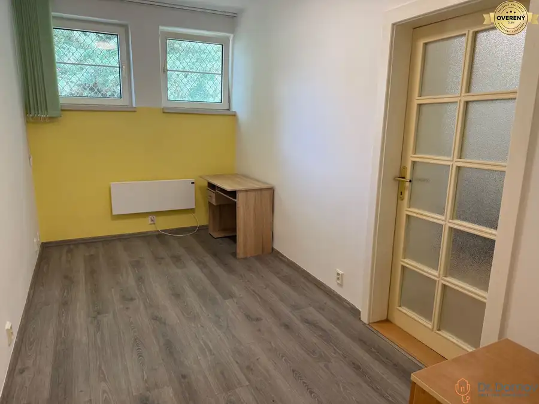

Na predaj stavebný pozemok s možnosťou výstavby RD, Malé Krškany
Male-krskany, Malé Krškany
- Plocha2500 m²
- Poschodie0.
- Stavpôvodný
- Vlastníctvoosobné
O nehnuteľnosti
Dr. Domov ponúka na predaj pozemok v pokojnej obci s vidieckym charakterom Malé Krškany iba niekoľko minút od centra Levíc. Ideálne miesto pre pokojné bývanie v malo frekventovanom prostredí v blízkosti prírody, náučného chodníka Horšianská dolina, cyklotrás a vinohradníckeho regiónu Tekov. Ideálne na trvalé bývanie a rekreáciu. Obec zároveň ponuka príjemný komunitný život s kultúrnymi a spoločenskými podujatiami počas celého raka.
ZÁKLADNÉ ÚDAJE:
* druh pozemku: záhrada
* lokalita: pokojné bývanie obklopené prírodou, výborná dostupnosť do Levíc (cca 5-10 minút)
* občianska vybavenosť – potraviny, pošta, knižnica, výdajne miesto balíkov, obecný úrad, športoviská, detské ihrisko
* inžinierske siete sa nachádzajú na pozemku, (voda, elektrina)
* výhodou tohto pozemku je jeho prístupnosť z oboch strán a tak sa dá efektívne rozdeliť až na 4 samostatné pozemky s výmerov cca 600m2 (2- pozemky prístupné z hlavnej cesty a 2-pozemky prístupné zo zadnej časti pozemku).
ROZLOHA POZEMKU: 2.500m²
LOKALITA A OKOLIE:
Obec Malé Krškany Vám ponúka pokojné vidiecke bývanie s približne 800 obyvateľmi, nachádzajúce sa len cca 150km resp. 1,5 hodiny cesty od Bratislavy a 7km (9min) od Levíc. Vďaka pokojnej atmosfére a výbornej dostupnosti do okresného mesta patrí medzi atraktívne lokality pre rodinné bývanie. Obec Krškany sa nachádza v srdci historického regiónu Tekov, ktorý je známy svojou bohatou históriou. Dominantou celého regiónu je neďaleký Levický hrad, ktorý patrí medzi najvýznamnejšie historické pamiatky južného Slovenska. Dnes v jeho areáli sídli Tekovské múzeum. Okolie ponúka široké možnosti trávenia voľného času. V blízkosti sa nachádza rekreačné stredisko Margita-Ilona s kúpaliskom, bazénmi a oddychovými zónami, ktoré je ideálne na letnú rekreáciu a rodinné výlety. V regióne sú dostupné športoviská v meste Levice – fitness centrá, futbalové ihriská, tenisové kurty, športové haly či plaváreň. Milovníci prírody ocenia cyklotrasy
v okolitej krajine Dolného Pohoria, možnosti na beh či rekreačný rybolov.
Možností kúpania a rekreácii v okolí:
6km/9min. - Kúpalisko Margita-Ilona Kalinčiakovo
14km/15min. -Termálne kúpalisko Santovka Wellnes
14km/14min. -Bátovská priehrada
26km/24min. -Kúpele Ďudince
31km/34min. -Štiavnické vrchy-Sitno, Počúvadlianske jazero
33km/34min. -Podhájska, Wellness centrum Aquamarin
Možnosti cykloturistiky a turistiky v blízkosti ako napr.:
Horšianska dolina – Turisticko náučný chodník popri rieke Sikenica- Národná prírodná rezervácia
Brhlovce – Skalné obydlia. Jedná sa unikátny komplex obytných a hospodárskych priestorov vytesaných priamo do sopečného podložia, ktoré stvoril vulkán SItno. Skalné obydlia sa nachádzajú na uličke s názvom Šurda. Ulička Šurda a priľahlé skalné obydlia sú dnes pamiatková rezervácia ľudovej architektúry
Územnoplánovacia informácia: UPI k dispozícii – s možnosťou výstavby RD.
CENA: 105.000,-EUR
V cene je zahrnutý bezplatný právny servis, spracovanie zmluvy o budúcej zmluve, kúpno-predajnej zmluvy a návrhu na vklad do katastra nehnuteľností.
Text a fotografie sú autorským dielom a majetkom realitnej kancelárie Dr. Domov
Parametre
| Rozloha pozemku | 2500 m² |
|---|---|
| Poschodie | prízemie |
| Vlastníctvo | osobné |
| Stav | pôvodný |
| Odvoz odpadu | áno |
| Voda | verejný vodovod |
| El. napätie | 230V |
| Inžinierske siete | áno |
| Terén | rovina |
| Prístupová cesta | asfaltová cesta |
| Pripravené na výstavbu | schválené v územnom pláne |
| Dátum zverejnenia | 8. 6. 2026 |
Kde to je
Mohlo by Vás zaujímať
 Byt10
140 000 €Znížená cena! veľký 3-izbový byt, pôvodný stav, Most pri Bratislave
Most pri Bratislave
3-izbový62.87 m²
Drevodom typu Okál je celkovo 3-podlažná stavba a obsahuje prízemie s pivničnými kobkami a 2 nadzemné poschodia bez výťahu. Ide o stavbu, ktorej…
Byt10
140 000 €Znížená cena! veľký 3-izbový byt, pôvodný stav, Most pri Bratislave
Most pri Bratislave
3-izbový62.87 m²
Drevodom typu Okál je celkovo 3-podlažná stavba a obsahuje prízemie s pivničnými kobkami a 2 nadzemné poschodia bez výťahu. Ide o stavbu, ktorej…
 Nebytové priestory10
Cena dohodouNa prenájom atraktívny nebytový priestor na ulici Koprivnická
Dúbravka, Bratislava
3-izbový65 m²
Dr. Domov ponúka na prenájom zariadený nebytový priestor vhodný na administratívne využitie na ulici Koprivnická 36 v kaskádovom bytovom dome v…
Nebytové priestory10
Cena dohodouNa prenájom atraktívny nebytový priestor na ulici Koprivnická
Dúbravka, Bratislava
3-izbový65 m²
Dr. Domov ponúka na prenájom zariadený nebytový priestor vhodný na administratívne využitie na ulici Koprivnická 36 v kaskádovom bytovom dome v…

Nebytové priestory10 Cena dohodouNa prenájom, priestor na prechodne bývanie aj podnikanie, Koprivnická Dúbravka, Bratislava 3-izbový60 m² Dr. Domov ponúka na prenájom zariadený nebytový priestor vhodný na administratívne využitie, ale aj ako príležitostné byvanie na ulici Koprivnická 36…